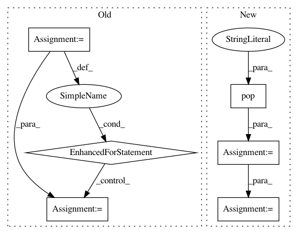

f1a7ea62b17afd9880e83aae0ff6f3996bc1e71d,dataset/models/tf/refinenet.py,RefineNet,body,#Any#Any#Any#,49
Before Change
with tf.variable_scope(name):
x = inputs
encoder_outputs = [x]
for i, ifilters in enumerate(filters):
x = cls.encoder_block(x, ifilters, name="downsampling-"+str(i), **kwargs)
encoder_outputs.append(x)
for i, ifilters in enumerate(filters[::-1]):
x = cls.decoder_block((x, encoder_outputs[-i-2]), ifilters//2, name="upsampling-"+str(i), **kwargs)
return x
After Change
tf.Tensor
kwargs = cls.fill_params("body", **kwargs)
encoder = kwargs.pop("encoder")
filters = kwargs.pop("filters")
with tf.variable_scope(name):
encoder_outputs = cls.make_encoder(inputs, **encoder, **kwargs)
x = None
for i, tensor in enumerate(encoder_outputs):
decoder_inputs = encoder_outputs[-i-1] if x is None else (encoder_outputs[-i-1], x)
In pattern: SUPERPATTERN
Frequency: 4
Non-data size: 6
Instances
Project Name: analysiscenter/batchflow
Commit Name: f1a7ea62b17afd9880e83aae0ff6f3996bc1e71d
Time: 2017-12-13
Author: rhudor@gmail.com
File Name: dataset/models/tf/refinenet.py
Class Name: RefineNet
Method Name: body
Project Name: analysiscenter/batchflow
Commit Name: 02098c5c44893ce455aefcfc452aa00bd655987b
Time: 2017-11-15
Author: rhudor@gmail.com
File Name: dataset/models/tf/unet.py
Class Name: UNet
Method Name: body
Project Name: has2k1/plotnine
Commit Name: e3d654efec256564ccf6185bac95ef6b399fce8b
Time: 2014-04-29
Author: has2k1@gmail.com
File Name: ggplot/stats/stat_vline.py
Class Name: stat_vline
Method Name: _calculate
Project Name: has2k1/plotnine
Commit Name: e3d654efec256564ccf6185bac95ef6b399fce8b
Time: 2014-04-29
Author: has2k1@gmail.com
File Name: ggplot/stats/stat_hline.py
Class Name: stat_hline
Method Name: _calculate